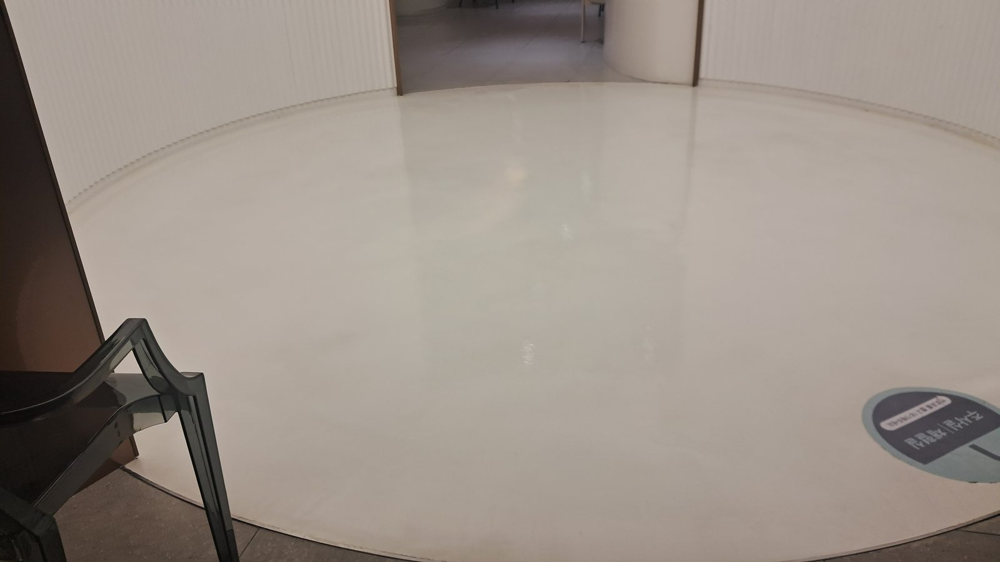

서초구 산부인과 청소 사례
에스앤유 여성의원 바닥 세정
- 작업 지역
- 서울시 서초구
- 시설
- 산부인과 · 에스앤유 여성의원
- 주요 작업
- 바닥 세정
안녕하세요. 샤인크린환경의 청소전문 브랜드 원내케어에요. 오늘은 서울시 서초구에 있는 에스앤유 여성의원의 바닥 세정 이야기를 전해 드릴게요. 이번에는 매일 사용하는 실내 바닥을 세정하는 작업을 진행했어요.
병원 바닥은 환자분들과 직원분들의 발걸음이 이어지는 공간이에요. 신발을 통해 들어오는 먼지나 일상적인 사용 흔적이 남을 수 있어 꾸준히 상태를 살펴보는 것이 좋아요. 넓게 보이는 곳과 출입문 주변처럼 이동이 잦은 부분을 함께 확인하면 관리 범위를 정하는 데 도움이 돼요.

바닥은 같은 공간 안에서도 위치에 따라 상태가 다를 수 있어요. 의자 주변이나 벽면과 이어지는 가장자리처럼 평소 지나치기 쉬운 부분도 있죠. 눈에 띄는 중앙 부분뿐 아니라 공간의 구석까지 살펴보면 어떤 곳에 청소가 필요한지 이야기하기 편해요.
이번 에스앤유 여성의원에서는 바닥 세정작업으로 실내 공간을 관리했어요. 사진에서도 출입문과 벽면 주변의 바닥을 살펴볼 수 있답니다. 바닥재와 사용 환경이 병원마다 다른 만큼, 필요한 관리 방법과 작업 범위도 현장에 맞춰 확인하는 것이 좋아요.
원내케어는 병원을 이용하는 분들이 기분 좋게 머무를 수 있도록 필요한 청소 범위를 함께 살펴보고 있어요. 서초구 산부인과 청소나 병원 바닥 세정을 알아보고 계신다면 편하게 말씀해 주세요. 평소 신경 쓰였던 구역과 관리 일정을 듣고 상담을 도와드릴게요.